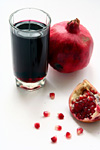

По мнению учёных из Израиля, употребление гранатового сока, особенно среди пациентов с почечной недостаточностью, способствует за счёт выраженного антиоксидантного эффекта снижению риска развития инфекционных заболеваний — второй по частоте причины летальных исходов в данной группе пациентов. Однако далеко не все разделяют оптимизм исследователей…
Как оказалось, существует доля правды в рекламе пользы для здоровья употребления гранатового сока, в частности у пациентов, находящихся на гемодиализе.

Исследователями было обнаружено, что при регулярном употреблении нескольких стаканов гранатового сока в неделю значительно снижается вероятность развития инфекционных заболеваний — второй ведущей причины летального исхода среди более чем 350000 американцев, находящихся на гемодиализе. Результаты исследования были представлены на прошлой неделе в рамках очередного заседания Американского общества нефрологов в Денвере, которые, однако, до сих пор не рассмотрены и не одобрены независимыми экспертами.
Проведение исследования совпало по времени с массовым негодованием по поводу появления в США сомнительной рекламы, заказанной известным калифорнийский производителем гранатовых соков POM Wonderful, согласно которой продукты из граната способны вылечить буквально любой недуг, начиная с заболеваний сердца и заканчивая раком предстательной железы и эректильной дисфункцией.
В качестве объекта исследования использовался продукт компании Naturafood. В ходе проведённого лабораторного анализа было показано, что в исследуемом продукте отмечался чрезвычайно высокий уровень полифеноловых антиоксидантов. Причём за последние три года в ходе проведения сравнительных исследований было продемонстрировано, что гранатовый сок имеет самый высокий уровень полифенолов по сравнению с другими различными продуктами, в частности, намного выше, чем в красном вине.
По предположению исследователей, богатая антиоксидантами диета для пациентов с почечной недостаточностью является чрезвычайно полезной, поскольку уровень свободных радикалов в процессе циркуляции крови по диализному аппарату значительно повышается. В исследование были включены пациенты, находящиеся на гемодиализе (n=101), которые случайным образом были распределены на две группы: первая — пациенты, получавшие напиток, по внешнему виду напоминавший гранатовый сок (плацебо), вторая — натуральный гранатовый сок компании Naturafood. После регулярного потребления половины стакана сока/плацебо 3 раза в неделю на протяжении одного года было отмечено, что у лиц, употреблявших гранатовый сок, имело место снижение уровня маркеров воспаления в периферической крови.
Кроме того, у пациентов, употреблявших гранатовый сок, регистрировалось меньшее число госпитализаций в стационар. Исследователи констатировали снижения числа госпитализаций по причине развития инфекций со снижением более чем на 40% в первую и на 80% — во вторую госпитализацию.
Среди 50 пациентов, регулярно употреблявших гранатовый сок в течение года, двое были вынуждены обратиться в стационар минимум дважды. Из группы, не употреблявших гранатовый сок, дважды были госпитализированы 11 участников исследования.
Остаётся неизвестным, в какой степени полученные результаты применимы к продуктам других производителей. Поэтому исследователи рекомендуют употреблять свежевыжатый сок, приготовленный самостоятельно, тем более что стоимость готового гранатового сока далеко не безобидна — гранатовый сок объёмом в 16 унций компании POM Wonderful продаётся по цене $4.
В ходе исследования не были зарегистрированы какие-либо нежелательные явления, однако нельзя упускать из внимания высокий процент калия в составе гранатового сока.
Вместе с тем результаты, полученные в ходе данного исследования, были восприняты неоднозначно…
Заведующий отделением нефрологии Мичиганского университета д-р. Brosius воспринял выводы своих израильских коллег с большим интересом, подтвердив, что до сих пор не сталкивался с другими средствами, которые имели бы подобный эффект. Вместе с тем, к полученным результатам он отнёсся несколько скептически. По его словам, хотелось бы получить подтверждение полученных результатов в других исследованиях, прежде чем с полной уверенностью утверждать об уникальных свойствах граната. И даже если полученные результаты подтвердятся, всё равно пока до конца неясно, что является их причиной, каковы активные ингредиенты в составе гранатового сока? По словам Marion Nestle, экспертa в области питания Университета Нью-Йорка, гранатовый сок — не единственный обладатель данных свойств. В проведённом исследовании нет обоснованного доказательства каких-либо присущих только гранатовому соку отличительных особенностей. Эффект, который связывают с употреблением гранатового сока, сравнивался с плацебо, а не с другим видом сока, который мог бы продемонстрировать те же самые свойства. Гранатовый сок, как и большинство, если не все фруктовые и овощные соки, обладает антиоксидантной активностью. В действительности ли данный факт делает гранат лучше других фруктов и овощей? Исследователям нужно это ещё доказать…
Pomegranate Juice Could Help Kidney Patients
Medscape